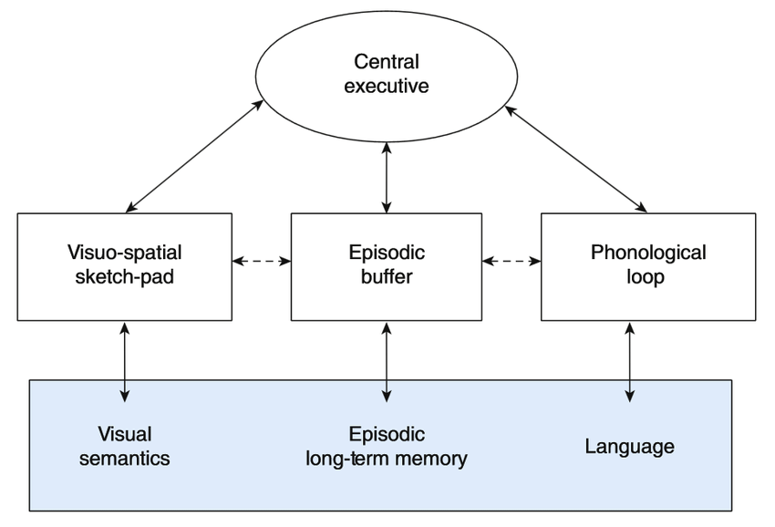

According to the Multimedia Leanring Theory (based on the multimedia principle):leanring will become deeper and longer lasting when there're both aural and visual input. The WM contains four components: Central executive. Phonological loop. Visuo-spatial working memory. Episodic buffer. and each one is responsible for specific functions.
The things people learned first come into temporary memory stores, the PHONOLOGICAL LOOP that is responsible for encoding the sound, and VISUO-SPATIAL Working MEMORY which encodes visual and patial information. The CENTRAL EXECUTIVE is for higher cognitive functions like contrast and compare, that all the informations are gathered together into EPISODIC BUFFER, where the mental representation occurs so that short-term memories become more permanently stored and even into long-time memories.
| COMPONENTS | FUNCTION |
|---|---|
| Phonological Loop | Encodes the sound |
| Visuo-spatial working memory | Encodes visual and patial information |
| Episodic buffer | All the informations will be gathered here |
| Central executive | Control the higher cognitive functions |
The familiarity (for the learner) and the difficulty of the content will affect the the multimodal digestion.